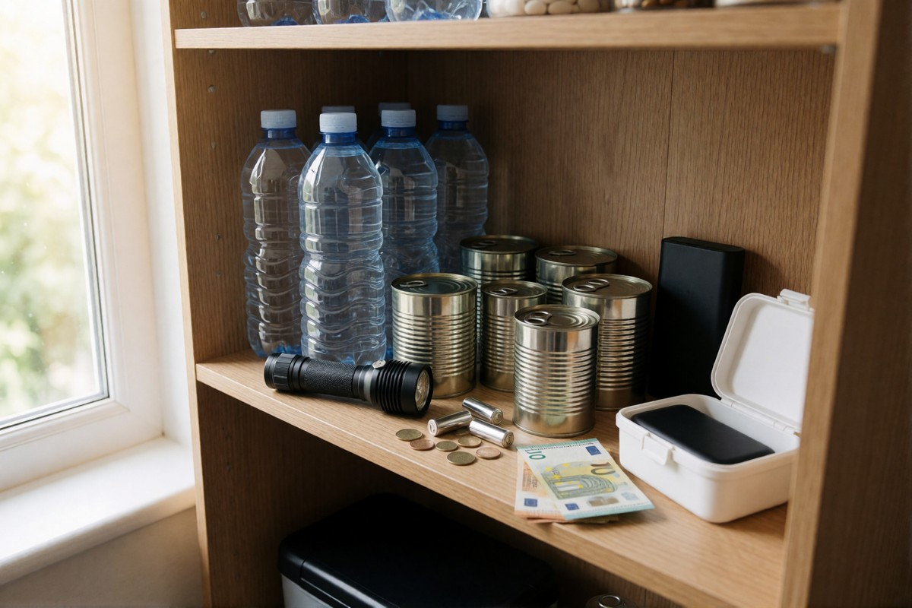
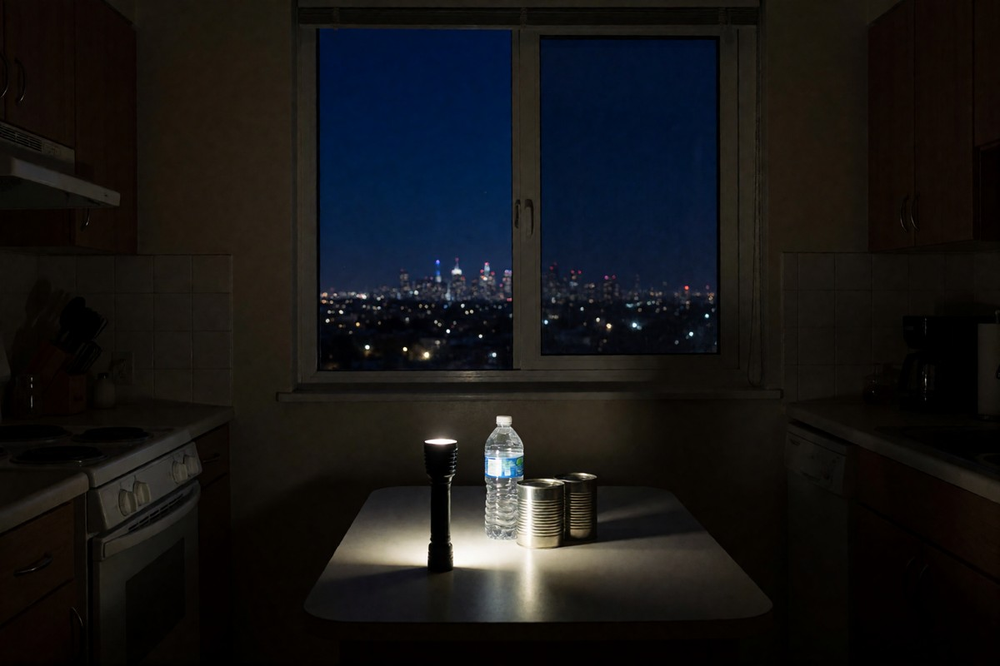
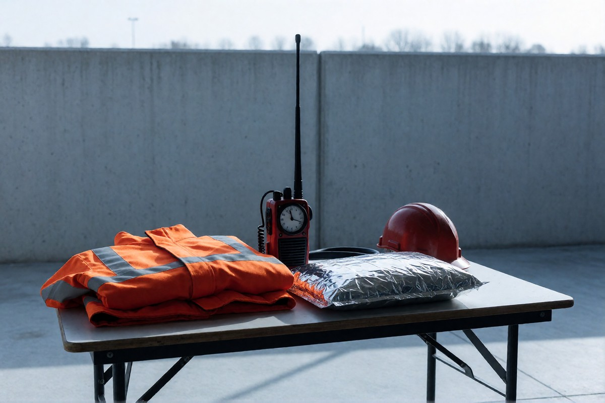

Attualità · 12 novembre 2026
Acqua, scatolette e contanti: l'Europa ci chiede di tenerci pronti

La Commissione europea ha consegnato ai cittadini un vademecum per cavarsela da soli 72 ore. È allarmismo o è buon senso? L'editoriale per gli abbonati, nella sua versione scritta.
di Franco Zanghì
«Scorta d'acqua e cibo in scatola, contanti a portata di mano.» Comincia così un servizio del Tg1 firmato da Matteo Alviti, che ha messo in fila una cosa che in Italia si sa poco: molti Paesi europei hanno già dato ai cittadini istruzioni scritte per le crisi, e non solo per le guerre. Fra gli scenari ci sono gli attacchi informatici, i sabotaggi, il meteo estremo.
Il fatto è del 3 novembre 2026: a Bruxelles, al Forum europeo della protezione civile, la Commissione ha presentato un vademecum per i cittadini, firmato dalla commissaria alle crisi Hadja Lahbib. È arrivato a Palazzo Chigi, e il ministro per gli Affari europei Tommaso Foti lo ha trasmesso alla Camera.
Che cosa chiede
Di cavarsela da soli per almeno 72 ore. Tre giorni senza corrente, senza telefono, senza bancomat: acqua da bere e per l'igiene, cibo che si conserva e si mangia senza cucinare, i farmaci di tutti i giorni, una torcia, le batterie, un caricabatterie portatile, un po' di contanti in banconote piccole. Anche per gli animali di casa. La parola da leggere bene è «almeno»: 72 ore sono il minimo, non il tetto.

Non è una stranezza di Bruxelles
La prima reazione, lo so, è un sorriso: l'Europa che ci spiega come fare la spesa. Ma basta guardare gli altri. La Svezia, due anni fa, ha mandato a più di 5 milioni di famiglie un opuscolo dal titolo che non lascia dubbi: se arriva la crisi, o la guerra. L'Olanda ha fatto lo stesso con 8 milioni e mezzo di case. Il Regno Unito ha appena lanciato una campagna per tenersi pronti tre giorni senza luce, acqua e telefono.
Non sono Paesi che hanno paura: sono Paesi che si organizzano. E noi italiani questa lezione la conosciamo bene. Chi ha vissuto un terremoto o un'alluvione sa che le prime ore sono quelle in cui sei da solo.

Come la vedo io
Lo stesso 3 novembre, a Palazzo Chigi, si è parlato degli attacchi informatici che in Europa hanno colpito i sistemi di refrigerazione di alcune catene di supermercati. In Italia, ha precisato la presidenza del Consiglio, l'impatto è stato limitato e non c'è allarme. Ed è giusto così, niente panico. Ma un blackout non annuncia l'arrivo con un telegramma.
Il governo ha fatto bene a non agitare nessuno. Adesso però la palla è a Roma: sono raccomandazioni, non leggi, e tocca al Parlamento decidere se farne una campagna. Me la immagino affidata alla Protezione civile, non a uno spot da Bruxelles.
Perché una cassa d'acqua in cantina e qualche scatoletta in dispensa non sono il segno che la guerra è vicina. Sono il segno di un Paese adulto, che non aspetta di essere salvato e che, se serve, dà una mano al vicino di casa.
Fonti
- Tg1, servizio di Matteo Alviti, novembre 2026
- AGI, «Kit di sopravvivenza Ue: cosa tenere in casa per 72 ore», 10 novembre 2026
- Open, «L'Ue chiede ai cittadini di fare scorta di acqua, cibo e contanti», 10 novembre 2026
- Sky TG24, «Kit d'emergenza per 72 ore, scorte di cibo, acqua e contanti: le raccomandazioni dell'Ue», 10 novembre 2026
Questo articolo è la versione scritta dell'editoriale per gli abbonati del 12 novembre 2026. L'articolo riferito è il servizio del Tg1 firmato da Matteo Alviti, andato in onda nel novembre 2026.